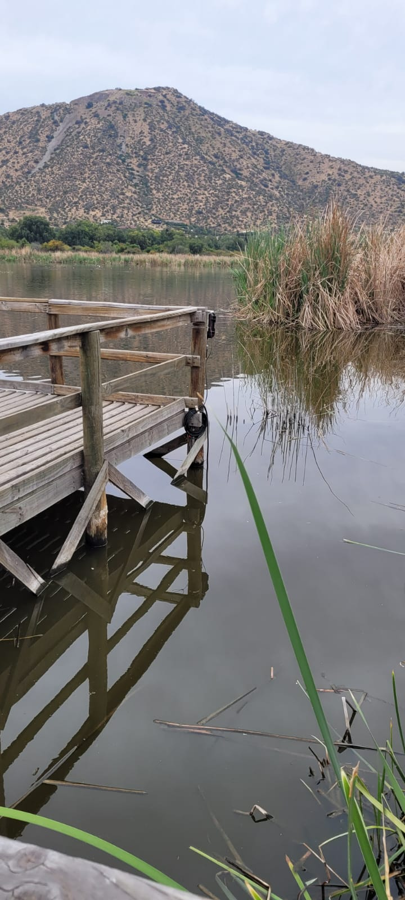
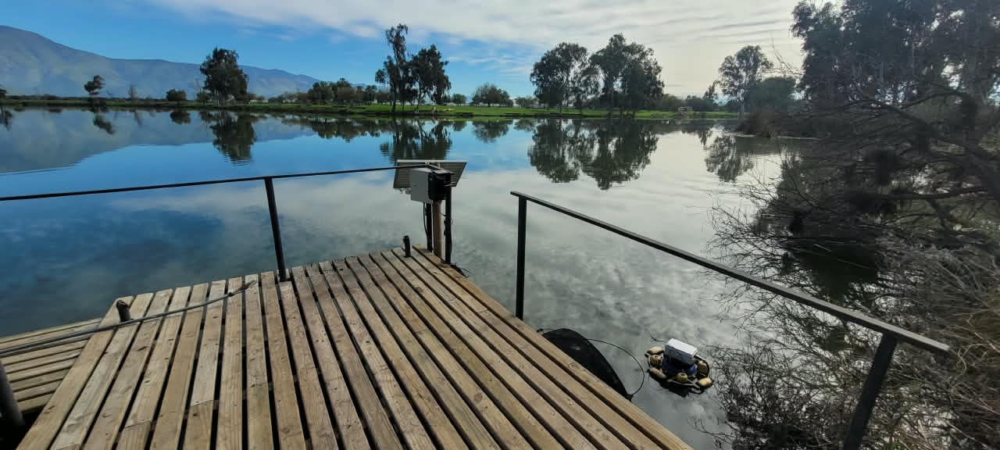
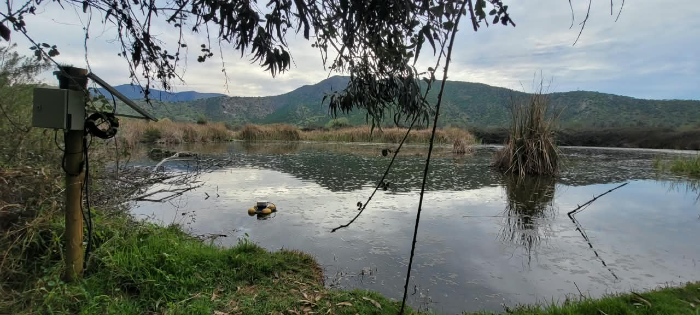
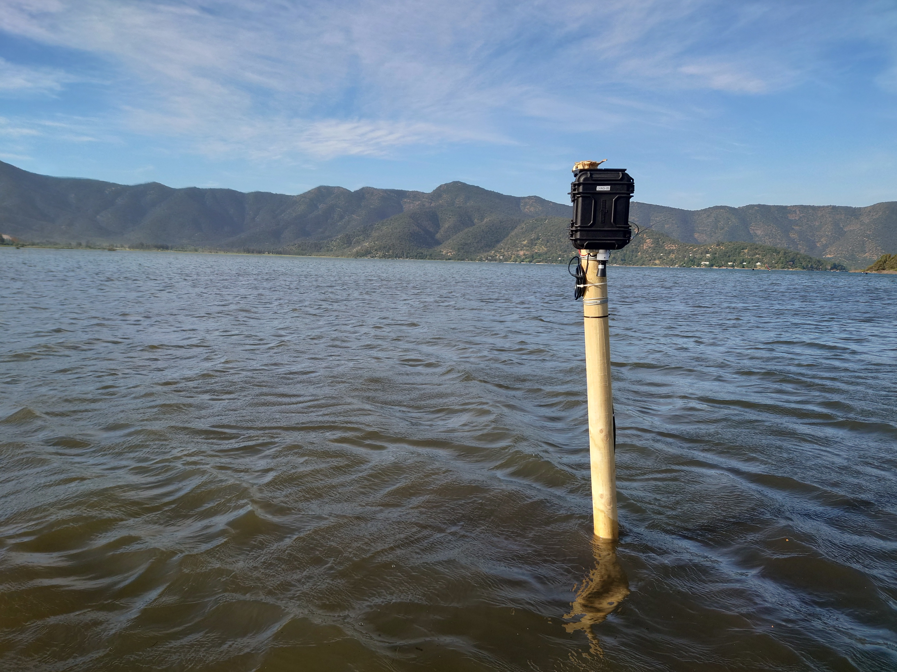
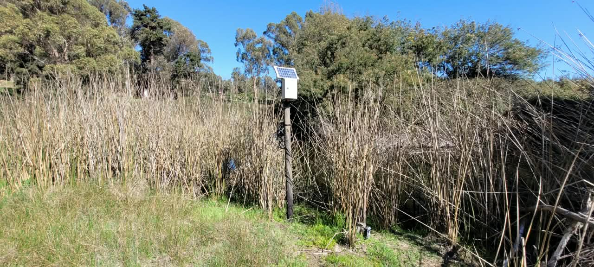

Explora las estaciones
Selecciona una estación de calidad o nivel de agua en la lista o en el mapa.
OBSERVACIÓN AMBIENTAL ABIERTA
Proyecto Línea de Bases Públicas RM y Humedal Mantagua. Explora las mediciones de nuestras estaciones y descarga sus datos.
Selecciona una estación de calidad o nivel de agua en la lista o en el mapa.





—
La red reúne estaciones de calidad y de nivel de agua. Las variables disponibles dependen de los sensores de cada estación.
Las series pueden contener interrupciones, incertidumbre o correcciones. La distancia al agua y la profundidad son mediciones de sus respectivos sensores y no constituyen por sí solas una cota de nivel comparable entre lugares.